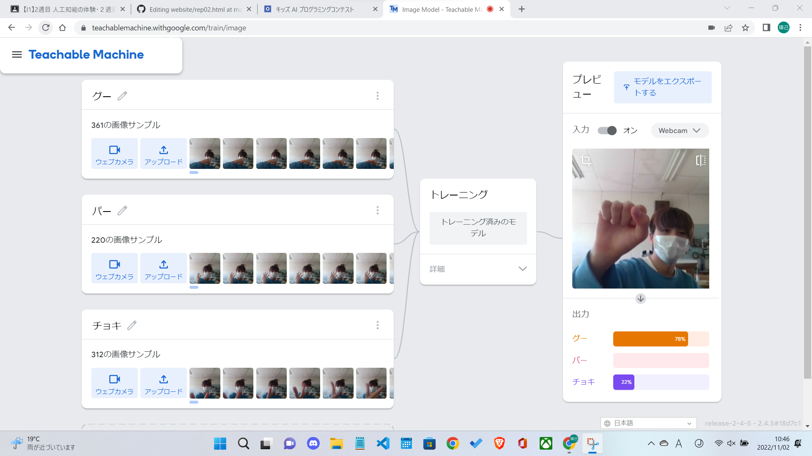

第2週目
2-1 １週目のレポートをHTMLで作る
１週目のレポート
1.内容
一週目のスクラッチで作ったものの説明の文章などが入ったページを自分で作りました。
また、スクラッチで作ったサイエンスアートやゲームの画像を挿入しました。
2.感想
はじめの方は全然わからなく、githubのコードを見るだけで疲れていたが、慣れてくると文章や画像の挿入や、文字の大きさの調整などがわかるようになってとても嬉しかった。
2-2 機械学習体験

1.内容
手のグーの形とパーの形とチョキの形を人工知能の覚えさせました。
2.感想
人工知能を自分で直接触れることができたのでとても楽しかったです。
人工知能のおおまかな仕組みは簡単だが、中身を知れば知るほど理解が難しくなると思いました。
2-3 VR（バーチャルリアリティー：Virtual Reality）の体験
1.内容
VRを利用してワークスペースを利用して複数人で同じ仮想世界に入って喋ったりしました。
また、コントローラーを使って絵を書いたりしました。
2.感想
VRを使って仮想空間で人とコミュニケーションをとることはとても楽しかったです。
実際にVRを利用したら会社の会議などをそれぞれの自宅で行うことができ、職場に行く必要がなくなると思いました。